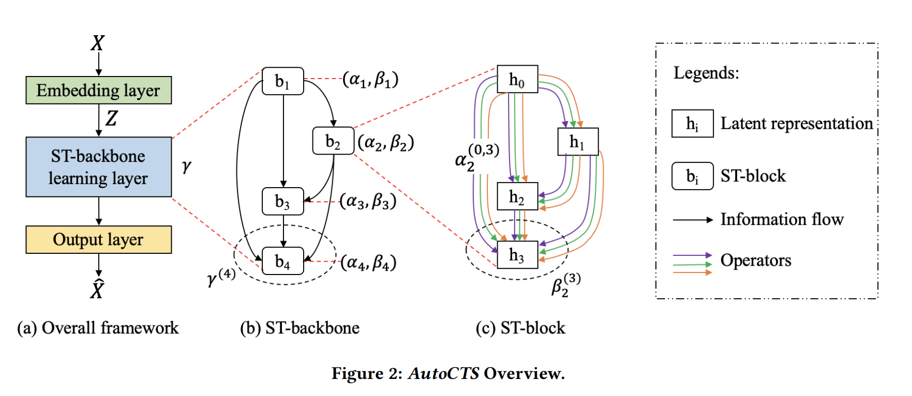
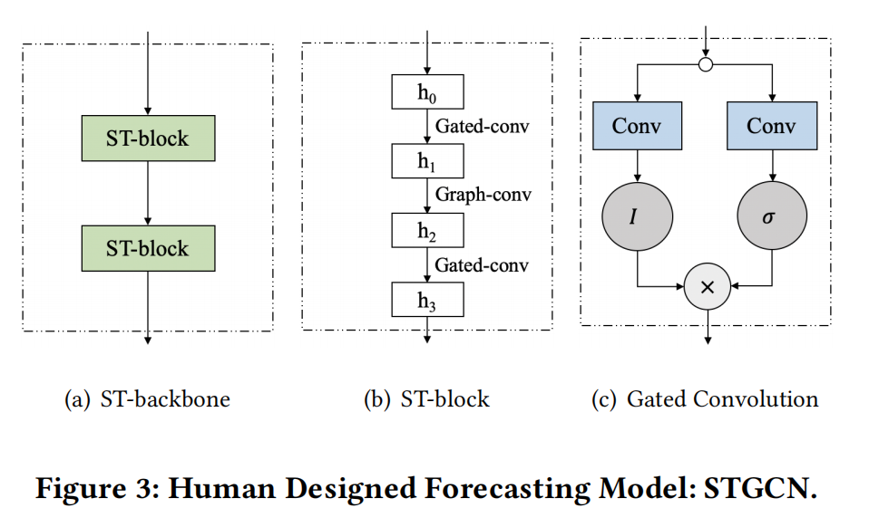
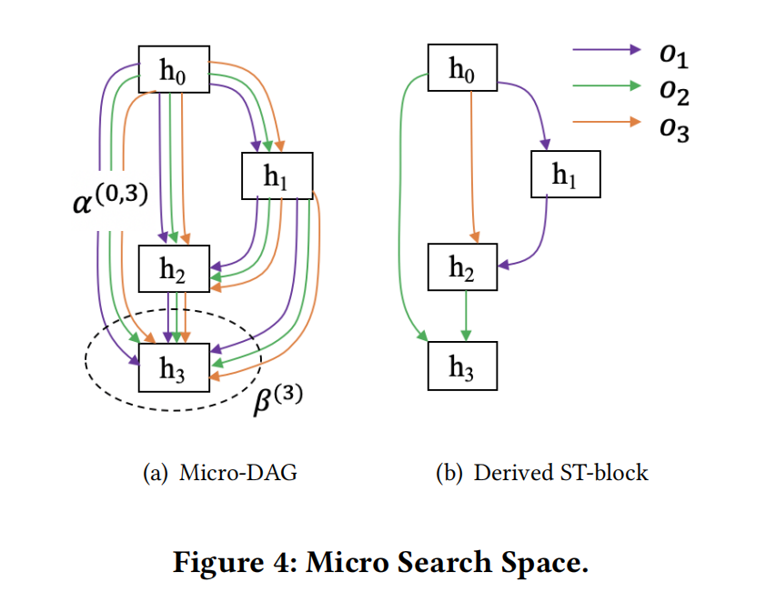
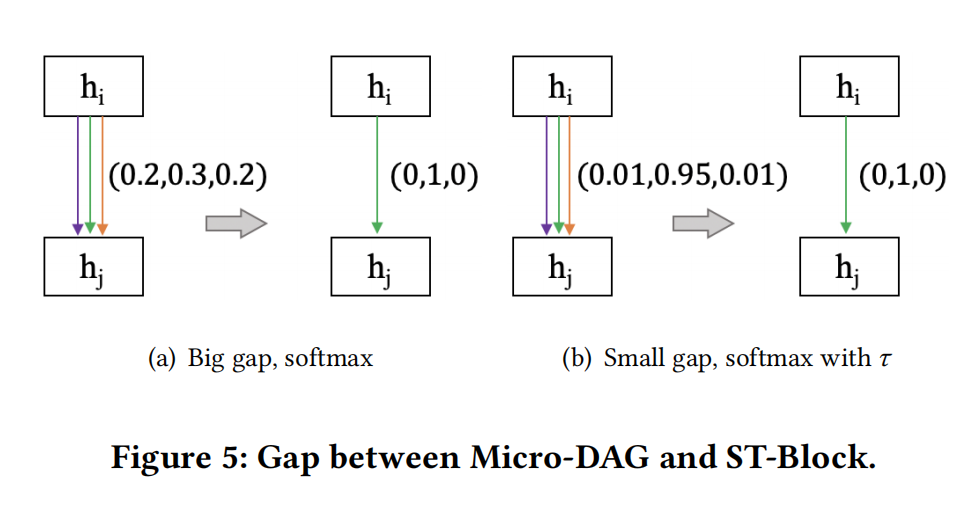
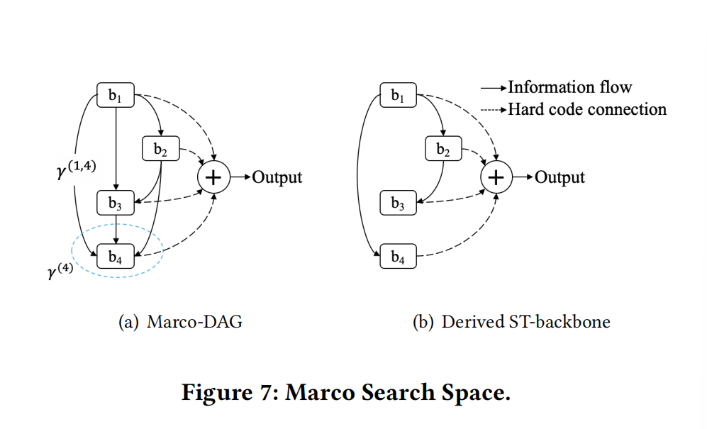

本文详细介绍了论文https://www.vldb.org/pvldb/vol15/p971-wu.pdf的研究内容和成果
引言
-
相关时序预测（CTS forecasting）在信息物理系统中非常重要
-
基于深度学习的CTS预测方法已经能够通过时空模块（ST blocks）根据时间序列的时间依赖性和空间关联性建模
-
ST-Blocks用于提炼原始数据的时间和空间特征
-
还存在两个挑战性难题
- ST-blocks手动构建，耗费成本高
- 现有的预测模型简单堆叠相同的ST-blocks，这么做限制了模型的潜力
-
采用自动化（AutoCTS）解决以上两个问题，可以自动识别具有高竞争力的ST块以及搭建具备成分复杂、拓扑结构复杂的ST块的模型
-
设计上而言，分别采用一个微观和宏观的搜索空间来构建可能的ST块结构以及不同成分的ST块之间的连接，然后采取一个搜索策略联合搜索出最佳预测模型
-
通过在8个广泛应用了CTS预测基准的数据集上进行实验，论证了设计的合理性以及AutoCTS自动搜索的预测模型比人工CTS找到的最佳模型还要好
介绍
-
时间依赖性揭示了过去数据和未来数据的关联
-
空间关联性表明了不同传感器产生的时间序列的差异性来源于传感器的部署位置差异
-
用ST-graph建模方式构建时空关联性
-
基于ST-graph建模方式，有很多不同的模型可以被用于预测。现行模型的结构大致为嵌入层——用以处理原始输入的时间序列数据；ST-Backbone层——通过一一堆叠式的ST-blocks提炼时空特征；输出层——根据提取出的特征提供最终预测
-
而许多研究建议在ST-backbone层提供独立的ST-blocks，例如STGCN采用的三明治式——两个时序卷积层建模时间依赖性，一个图卷积层用于捕获空间关联性；Graph Wavenet采用了更简单的ST块，部署门控时序卷积构建时间依赖性，用图卷积层捕获空间关联性
-
还存在两个挑战性难题
- ST-blocks手动构建，耗费成本高
- 现有的预测模型简单堆叠相同的ST-blocks，这么做限制了模型的潜力
-
需要采用自动化来解决
-
传统NAS没法解决上述两个问题
- 没有给时间序列预测提供良定的搜索空间，而直接用其他领域（cv，nlp）的搜索空间并不能捕获最好的ST块。用所有现存文献内的ST算子作为搜索空间又会导致其过大，复杂度过高。
- 现存NAS搜索的是特定拓扑结构下的最优元胞，所以类似于层层堆叠相同ST块
-
希望AutoCTS能自动设计ST-block和具备复杂拓扑结构的ST-backbones
-
设计上而言，分别采用一个微观和宏观的搜索空间来构建可能的ST块结构以及不同成分的ST块之间的连接（ST-backbone），然后采取一个搜索策略联合搜索出最佳预测模型
- 微观的搜索空间选用精简的基于人工设计的ST块曾用到的T-operators和S-operators集。在这里面高效搜索高竞争力的ST块，从而解决第一个问题。
- 宏观的搜索空间采取联合搜索的策略搜索一个ST块成分复杂的拓扑结构，解决第二个问题
准备工作
-
Correlated Time Series。例如100个摄像头再一天内每五分钟检测一次，一次检测两个特征——交通流量和交通速度。一天内将产生多元时间序列$R^{100x288x2}$。采用图的方式表述关系，G(V,E,A)，V中每个节点对应一个时间序列（一个摄像头），边代表两个摄像头（时间序列）的空间关系，邻接矩阵A则蕴含了边的权值——反映了时间序列间的关系强弱，是根据传感器距离预先定义或者提前学习出来的。
-
Correlated Time Series Forecasting。根据已经给定的P步，同时考虑单步预测和多步预测。
-
单步预测预测未来的第Q步，可以描述为$\hat{X}_{t+P+Q}=F_w(X_{t+1},X_{t+2},…,X_{t+P};G)$，其中$F_w$是预测模型，w是可学习参数，$\hat{X}$是预测数值。
-
多步预测预测未来的Q步，可以描述为${\hat{X}_{t+P+1},\hat{X}_{t+P+2},…\hat{X}_{t+P+Q}}=F_w(X_{t+1},X_{t+2},…,X_{t+P};G)$
-
-
本文的目的在于自动构建一个精确的预测模型$F_w$，需要考虑的参数为描述模型$F_w$的参数θ——用于描述ST-Backbone中的ST块以及连接情况；以及参数w——被用于不同ST块中算子、卷积算子核心部分以及注意力算子的预测矩阵。目标函数如下：$$argmin_{θ,w}=ErrorMetric(F_w,D)$$，其中D是数据集，目标是找出使误差函数最小的参数。
自动CTS预测

- 核心部分是ST-backbone learning层，可以自动设计ST-backbone和其中的ST块
- 搜索ST-backbone时，用γ参数化了$b_1$,$b_2$和$b_3$连接到$b_4$的方式。当搜索ST块时，用$α_2$表示隐藏表达式$h_0$和$h_3$之间的算子的参数，用$β_2$参数表示隐藏表达式$h_0$,$h_1$和$h_2$连接到$h_3$的方式。故而用一个参数对{$α_i$,$β_i$}可以表达一个成分复杂的ST块
搜索粒度
- 搜索空间可以由不同粒度的算子构成，如果这些算子的粒度都是良定的，那么会有更大的机会搜索出好的神经网络结构，但是这样往往会产生一个很大的搜索空间，需要花费很长的时间和庞大的计算资源。相比而言，一个基于粗粒度算子的搜索空间会比较小，且不耗时，不需要很多计算资源，但是这样会引入人工偏差，导致无法找到更优秀的架构。
- 三种粒度，从粗到细，分别为ST-blocks，S/T operators和basic computations。如下图所示，

- 最粗糙的搜索粒度是使用人工设计的ST块作为搜索单元构成搜索空间，在其中搜索寻找新颖的ST-backbone（复杂而非单一的拓扑结构）
- 稍微精细一点的搜索粒度是将人工设计的S/T算子作为搜索单元构成搜索空间，在其中搜寻更新颖的ST块内部结构。
- 最精细的搜索粒度，是以基础运算为搜索单元构成的搜索空间，在其中搜索出合适的参数从而找到更新颖的算子
- 设计时将第一种定义为Macro Search Space，将第二种定义为Micro Search Space
Micro Search Space
- Micro-DAG，是每个ST-block中的隐藏结构，$h_0$用于接受上一层的输出。每个节点$h_i$代表一个隐含表达式，两个隐含表达式之间的边代表一个算子，所以如果考虑一个算子集合O，每两个节点之间就有|O|条边

-
最终目的是让每个节点最多只能有两个前置节点，这样可以构造相对内部结构较为复杂的ST块，同时避免引入太多参数
-
micro-DAG揭示了具备M个隐含表达式的ST块的所有可能的内部结构，结构总数为$|O|^{\frac{M(M-1)}{2}}$个
-
参数化过程中用$α^{(i,j)}∈R^{|O|}$表示从$h_i$到$h_j$的各个算子的权重（待学习），随即用所有算子的权重比定义从 $h_i$到$h_j$的变换（有点类似softmax）$$f^{(i,j)}:=\sum_{o∈O}{\frac{exp(α_0^{(i,j)})}{\sum_{o’∈O}{exp(α_{0’}^{(i,j)})}}}o(h_i)$$
-
对于每个节点$h_j$，根据其j条入射边做参数化处理。用参数$β^{(j)}∈R^j$(待学习)衡量j条边的权重，每个节点的隐含表达式可以给出如下计算公式$$h_j:=∑_{i<j}\frac{exp(β^{(j)}[i])}{∑_{i<j}exp(β^{(j)}[i])}f^{(i,j)}$$
$$:=∑_{i<j}\frac{exp(β^{(j)}[i])}{∑_{i<j}exp(β^{(j)}[i])}\sum_{o∈O}{\frac{exp(α_0^{(i,j)})}{\sum_{o’∈O}{exp(α_{0’}^{(i,j)})}}}o(h_i)$$ -
在这种建模下，给定第一个节点$h_0$就可以算出每个节点的表达式，用反向传播炼出α和β后，即可找到最终的ST块内部结构（每个节点$h_j$只保留两个算子，一个来自于$h_{j-1}$另一个则通过定义权重来挑选）。定义如下权重$$w_0^{(i,j)}:=\frac{exp(β^{(j)}[i])}{∑_{i<j}exp(β^{(i,j)}[i])}\frac{exp(α_0^{i,j})}{∑_{o’∈O}exp(α_{o’}^{i,j})}$$找到这样的算子o：$argmax_{o∈O’}w_o^{(i,j)}$
-
然而derived ST-block可能会与原先的micro-DAG有比较大的差距，这是因为简单比较得到的权重向量会让如下两种情况结果一样：
-
为了降低derived ST-block和micro-DAG间的差异，在标准化参数α时引入参数τ，即替换$\frac{exp(α_0^{(i,j)})}{\sum_{o’∈O}{exp(α_{0’}^{(i,j)})}}$为$\frac{exp(α_0^{(i,j)}/τ)}{\sum_{o’∈O}{exp(α_{0’}^{(i,j)}/τ)}}$，从而$h_j$的计算也跟着变化：$$h_j:=∑_{i<j}\frac{exp(β^{(j)}[i])}{∑_{i<j}exp(β^{(j)}[i])}\sum_{o∈O}{\frac{exp(α_0^{(i,j)}/τ)}{\sum_{o’∈O}{exp(α_{0’}^{(i,j)}/τ)}}}o(h_i)$$，相当于进一步放大softmax后的向量信息间的差异，当τ——>0时，softmax的输出结果已经很接近one-hot向量了。这样定义，对于每个节点对$(h_i,h_j)$，最大的$α_o^{i,j}$会非常显著，从而权重$w_0^{i,j}$也会很显著，derived ST-block和micro-DAG间的差异也会变小。
-
算子集的范围也可以缩小。可以制定两个原则来选择一个精简的S/T算子集来提高效率。首先是要选择捕获不同视角的S/T算子，对他们进行范畴划分；其次是对于每个范畴的S/T算子，选择其中效率最高的。可以分为如下三个family：

- 根据两个评判标准最终选出6类算子DGCC,INF-T,DGCN,INF-S,zero,identity
- 考虑不同算子family的差异性
- 模型长期的时序依赖性
- 效率
- 从每个family中选出效率最高的变量
- 考虑不同算子family的差异性
Macro Search Space
-
同样采用图的形式，macro-DAG，每个节点$b_i$代表一个ST-block，每条边代表有向信息流，eg：edge$(b_i,b_j)$代表从$b_i$流向$b_j$的信息流
-
显然，最终学习得到的ST-backbone用图表示是macro-DAG的一个子图，在其结构中，每个ST-block节点只保留一个输入边

- 定义结构参数γ，令$e_{in}^{(j)}$和$e_{out}^{(j)}$为ST-block $b_j$的输入和输出表达式，$γ^{(i,j)}$表示edge $(b_i,b_j)$的权重，并定义$$e_{in}^{(j)}:=∑_{i<j}\frac{exp(γ^{(i,j)})}{Σ_{i<j}exp(γ^{(i,j)})}e_{out}^{(i)}$$，经过学习后，找出最大的$γ^{i,j}$，从而确定拓扑结构。
- 联合搜索空间为$Θ=((α_i,β_i),γ)$
Search Strategy
- AutoCTS采用二阶段搜索策略
- 架构搜索——找到最优ST-Backbone。通过划分训练数据为伪训练集和伪验证集，用来训练Θ和网络权重w（如CNN和GCN的核心,Attention的projection矩阵）。采用双层优化算法找到最优Θ和w：$$min_{Θ} L_{val}(w’,Θ)$$ s.t. $$w’=argmin_wL_{train}(w,Θ)$$

- 架构演化
仅仅保留架构参数Θ而丢弃网络权重w，在原始数据集上训练验证出新的网络参数w‘
- 架构搜索——找到最优ST-Backbone。通过划分训练数据为伪训练集和伪验证集，用来训练Θ和网络权重w（如CNN和GCN的核心,Attention的projection矩阵）。采用双层优化算法找到最优Θ和w：$$min_{Θ} L_{val}(w’,Θ)$$ s.t. $$w’=argmin_wL_{train}(w,Θ)$$
如果您喜欢此博客或发现它对您有用，则欢迎对此发表评论。 也欢迎您共享此博客，以便更多人可以参与。 如果博客中使用的图像侵犯了您的版权，请与作者联系以将其删除。 谢谢 ！